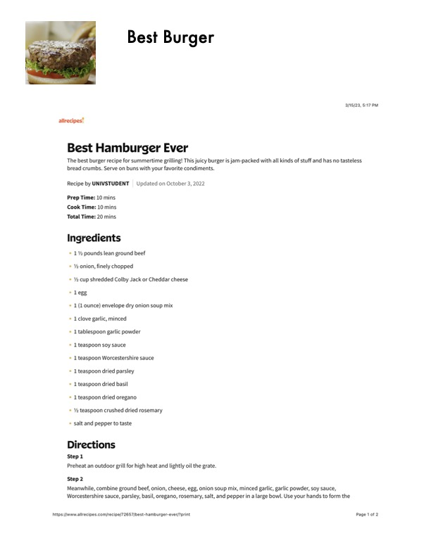

Best Burger

Original cookbook page 440
Ingredients
- * 1% pounds lean ground beef
- % onion, finely chopped
- Y cup shredded Colby Jack or Cheddar cheese
- * Legg
- 1 (Lounce) envelope dry onion soup mix
- 1 clove gartic, minced
- L tablespoon garlic powder
- 1 teaspoon soy sauce
- 1 teaspoon Worcestershire sauce
- 1 teaspoon dried parsley
- 1 teaspoon dried basil
- 1 teaspoon dried oregano
- % teaspoon crushed dried rosemary
- salt and pepper to taste
Instructions
- Preheat an outdoor grill for high heat and lightly oil the grate. Step 2 Meanwhile, combine ground beef, onion, cheese, egg, onion soup mix, minced garlic, garlic powder, s Worcestershire sauce, parsley, basil, oregano, rosemary, salt, and pepper in a large bowl. Use your har httpsif/www-allrecipes. com/recipe/72657/best-hamburger-ever/?print
Recipe #440 from collection